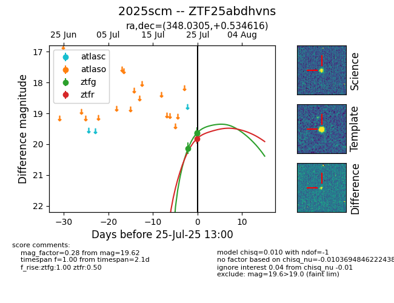

Target 2025scm at 2025-07-25 13:00, see:
FINK: fink-portal.org/2025scm
Lasair: lasair-ztf.lsst.ac.uk/objects/2025scm
ALeRCE: alerce.online/object/2025scm
TNS: wis-tns.org/object/2025scm
YSE: ziggy.ucolick.org/yse/transient_detail/2025scm
alt names
ZTF25abdhvns (ztf,fink)
2025scm (tns,yse)
coordinates:
equatorial (ra, dec) = (348.0305,+0.53462)
galactic (l, b) = (78.0835,-53.45911)
photometry
last ztfg=19.62, ztfr=19.82
3 ztfg, 1 ztfr detections
